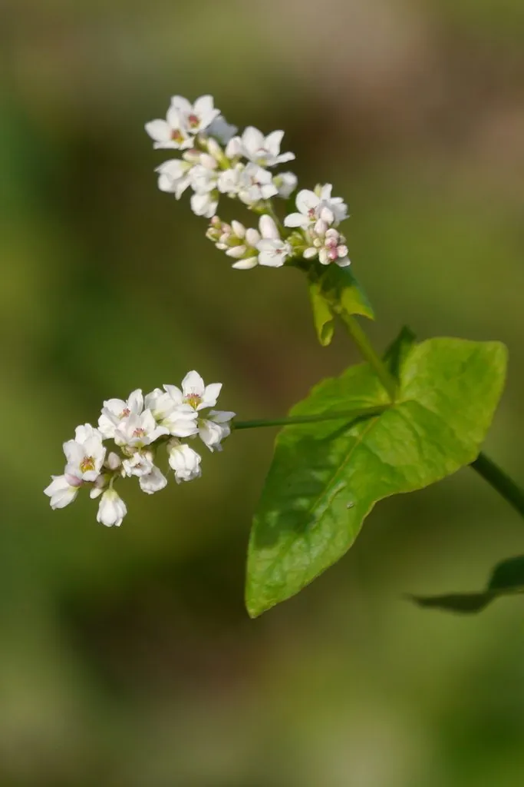

农作物与经济植物 · 植物界
荞麦 Fagopyrum esculentum

荞麦不是禾本科的麦类，而是蓼科植物，籽粒可磨粉做饸饹、面条，生育期短，是优良的救荒作物和蜜源。
- 分类
- 门被子植物门纲双子叶植物纲目石竹目科蓼科属荞麦属
- 栖息环境
- 温带、亚热带的山地与瘠薄旱地，生育期短、适应性强
- 地理分布
- 原产中国东北与西伯利亚，现主产于中国、俄罗斯、乌克兰等地
- 保护级别
- 暂无评估（栽培作物）
物种志
荞麦是一年生草本，株高 0.4–1 m，茎直立，多分枝，呈红绿色。叶片心形或三角形，互生，托叶鞘状。花白色或淡红色，花瓣五枚，总状花序，花蜜丰富。果实为瘦果，三棱形，成熟时黑褐色或棕褐色，种子富含淀粉。荞麦不是禾本科的“麦”，而是蓼科植物，形态与麦类差别很大。
荞麦原产中国东北与西伯利亚一带，栽培历史约 2000–3000 年，是重要的杂粮与救荒作物。它生育期短，仅 60–90 天，耐瘠薄、适应性强，可作灾后补种作物；花果期长，是优良的蜜源植物。荞麦籽粒可磨粉制成饸饹、面条、饼类，富含蛋白质、膳食纤维和芦丁等黄酮类物质；荞麦茎叶柔嫩，可作饲料或绿肥。中国北方与西南山区是荞麦主产区，苦荞是荞麦的一个近缘种，营养价值很高。
形态与习性
- 株高0.4–1 m，茎多分枝
- 花白色或淡红色，花蜜丰富
- 果实三棱形瘦果
- 生育期约 60–90 天
- 用途磨粉做饸饹、面条
- 营养含芦丁等黄酮类物质
趣味知识
- 荞麦不是禾本科的麦类，而是蓼科植物。
- 荞麦生育期只有两三个月，常被用作灾后补种的救荒作物。
- 荞麦花蜜丰富，是重要的蜜源植物，荞麦蜜颜色深、风味浓。